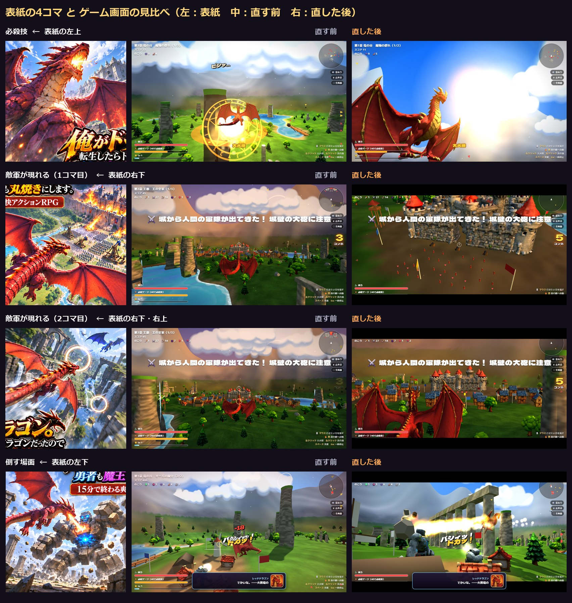
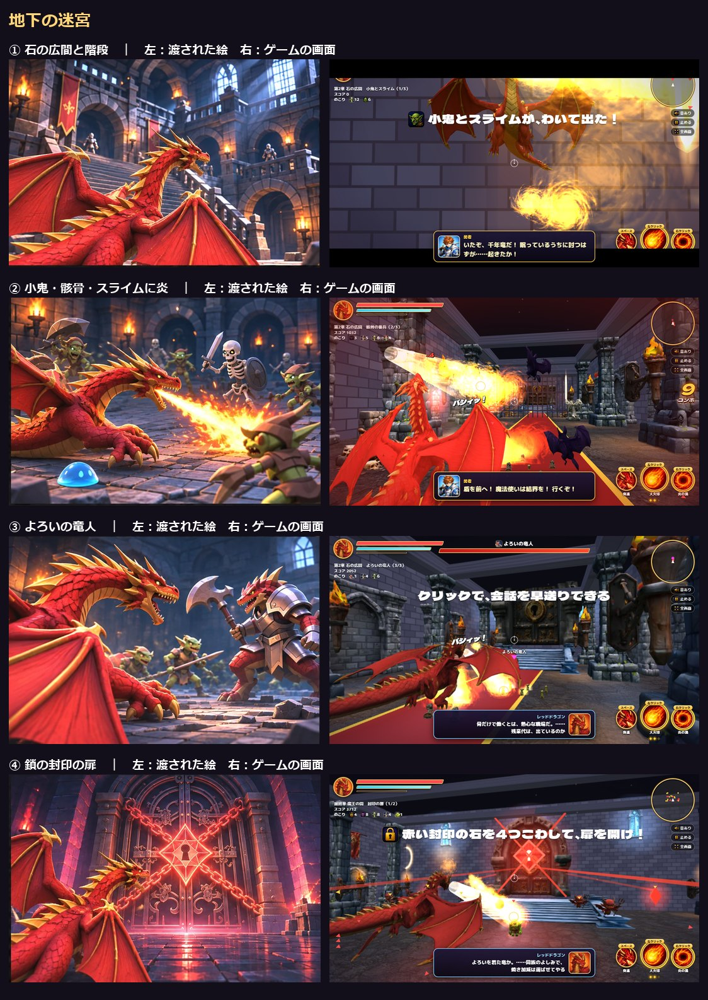
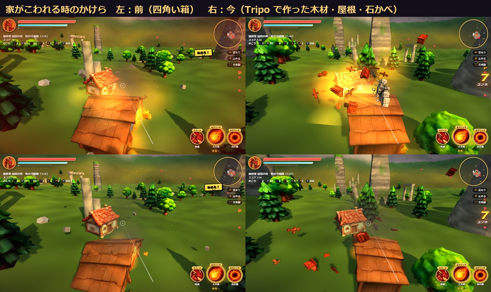

渡された絵 と ゲーム画面の見比べ
2026年11月15日 版 1116aazx （左：渡された絵 右：ゲームの画面）
結論：ふみさんの2回めの指示（11/15 午後）で、表紙の4コマ・洞窟・ワイバーン・迷宮・ゴーレム戦・魔王の間を、絵と同じ構図になるように撮り直しました。王城は、とがった塔のならぶ石の城に作り直しました。洞窟には竜の登場の場面、迷宮には大階段と鎖の封印の扉、魔王の間には「半身封印 → 全身解放」の順番が入りました。まだ弱いのは、谷の地面のやわらかさと、炎の形（丸い火の玉のつらなり・白っぽい帯）です。
✍ 文字で指示できます。各コマの下の黄色い箱で、直したい所にチェック → コピー → Claude Code に貼ってください。コマの見出しも文字で選べます。 関連：前後の対比／紙芝居の一覧／身長くらべ
表紙の4コマ

合っている所
- 左上：低い所から見上げた、ほえる竜。頭は画面の上、口もとに炎の光。右うしろに、とがった塔のならぶ王城。
- 右上：竜が画面の左に大きく、ななめに飛ぶ。行く先に金色の輪が2つ、下に滝と石のアーチ、右上の空にワイバーン、ふちに疾走感の筋。
- 左下：左上の竜から右下のゴーレムへ炎のすじ。胸が青く光り、岩のかけらが飛ぶ。
- 右下：左下の手前に竜の背と翼。まん中に兵の隊列と投石機、燃える城壁と城、奥の右上に王城。
まだちがう所
- 左上：絵は口から白い炎を空へはく瞬間。ゲームは口もとの光まで。竜のうろこは絵ほど細かくない。
- 右上：ワイバーンは緑（絵は青）。谷は絵ほど深くない。
- 左下：ゴーレムは絵ほど大きくなく、手前に木が映る。炎は丸い火の玉のつらなり。
- 右下：絵は竜の頭が右を向いて大きく入る。ゲームは背中ごし。兵は絵ほどびっしりではない。
今回直した事
- 4コマとも、表紙と同じ構図になるように、竜・相手・カメラの置き場所を決めて撮り直した（11/15 午後。ふみさん「構図守ってくれ」「構図、位置関係、カメラ、エフェクトで評価して合わせて」）。撮る台本は tripo\shots\covA\cover4.py。
- 王城を作り直した（とがった塔のならぶ灰色の石の城。前は白くとけた岩山に見えた）。
- 赤い竜が炎をはく時・必殺技をためる時に、口もとが光り、口を大きく開けるようにした。
- 前の絵は 表紙スクショ_before_1115c フォルダ。
✍ このコマを直したい時：直したい所にチェック →（書ける時は）どう直すかを書く → コピーして Claude Code に貼る
左上：必殺技（大火球）。空へ火球をはなつ竜と、右うしろの王城（王都）
右上：谷を速く飛び、金色の輪をくぐる（疾走感の筋）。ワイバーンも見える
左下：岩の巨人ゴーレムに、炎をあびせる（王国編・国境の町）
右下：軍勢と燃える城を、竜の肩ごしに見下ろす（王都）
勇者の一行との戦い（洞窟）

合っている所
- ① 竜の登場：3人の背中ごしに、左上を飛ぶ竜を見上げる。並びは絵と同じ（左から魔法使い・騎士・勇者）。
- ② 真横から。左上に竜の頭、口から勇者の盾へ炎。金色の結界。
- ③ 勇者が空中から竜の頭へ斬りこむ。
- ④ 3人のうしろから、翼を広げた竜と向き合う。
まだちがう所
- 絵の①は外（城と橋）だが、ゲームは洞窟の中（決めごと）。
- ②③は、撮る時に立ち位置とカメラを決めた物。遊んでいる時のカメラは竜のうしろ。
- 炎は丸い光のつらなりで、絵の太いすじにはならない。青い三日月の剣筋は絵より小さい。
- 一行は絵より小さく映る。
今回直した事
- 章の始まりに「竜の登場」の場面を入れた（竜が飛んで現れ、一行の頭の上をすべって降りる。約3.8秒・スキップできる）。ふみさん「1枚目は竜の登場シーン」。
- 一行の並びを絵と同じにし、竜との間を近づけた（17 → 13）。
- 竜の光を、目のあたり → 口の中に直した（ふみさん「目ではなく口光らせて」）。竜が宝の山や床にめりこまないよう、降りる道と立つ場所を直した（ふみさん「めり込んでいる」）。
- 撮る瞬間を選び直した（ふみさん「スクショのタイミングが悪い」）：①翼を広げて飛ぶ所 ②真横から炎を受ける所 ③空中の勇者と竜の頭 ④口が光ってほえる所。
- 4コマとも撮り直した（台本 tripo\patches\cave_intro2.py、撮る台本 tripo\shots\cavC\cave4.py）。
✍ このコマを直したい時：直したい所にチェック →（書ける時は）どう直すかを書く → コピーして Claude Code に貼る
① 竜を見上げる一行
② 炎を盾と結界で受ける
③ 勇者の飛びこみ斬り
④ 3人と向き合う
ワイバーンとの一騎打ち

合っている所
- ① 緑のワイバーンが手前、赤い竜が奥で土けむり。うしろに遺跡と滝のがけ。
- ② 正面からぶつかる。星形の光と金の破片。足元に遺跡。
- ③ 緑の風の帯で炎をかわす。
- ④ 2体が近くで組み合う。
まだちがう所
- 地面は、色のむらと小石を足したが、絵のやわらかい草原には届いていない。
- ④は、絵ほど腕や首ががっちり組んでいない。
- ③の炎は、丸いかたまりのつらなり。
今回直した事
- 空を深い青と大きな雲に。一騎打ちの舞台に、石の遺跡・アーチ・滝のがけ・草と花を足した（ふみさん「空の描写、地面の描写とオブジェクト」）。
- 突っこむ時の土けむりと石つぶて、ぶつかる時の星形の光、風の帯、速さの筋を足した。
- 4コマとも、2体を大きく映して撮り直した（台本 tripo\patches\wyv_look.py・wyv_look2.py、撮る台本 tripo\shots\wyvD\wyv4.py）。
✍ このコマを直したい時：直したい所にチェック →（書ける時は）どう直すかを書く → コピーして Claude Code に貼る
① 低く突っこんでくる
② 正面からぶつかる
③ 炎を風でかわす
④ 取っ組み合い
地下の迷宮

合っている所
- ① 左手前に竜、右奥に手すりつきの大きな石の階段。青い窓とたいまつ。
- ② 左の竜から右へ広がる炎。右に小鬼と骸骨、左下にスライム。
- ③ 左に竜、右に大きなよろいの竜人、間に小鬼。壁にアーチのくぼみ・柱・赤いたれ幕。
- ④ 竜の彫りの扉に、X字の鎖と赤く光るかぎ穴の印。
まだちがう所
- ①②③は、撮る時に竜と敵を絵の並びに置き、横からのカメラで撮った物。遊んでいる時のカメラは竜のうしろ。
- 絵の①は階段が折れて、2階の回廊がある。ゲームはまっすぐな階段1つ。
- 絵は竜を横から見ている。ゲームは竜のななめうしろから。
今回直した事
- 壁を作り直した（石1つずつの光とかげ、アーチのくぼみと柱の壁を並べた）。ふみさん「壁がしょぼい、階段がない」。
- 石の広間の入口に大階段を置いた（竜は階段の上から始まる）。
- 封印の扉を作り直した（鎖の輪・回る紋・脈動・床の赤い照り返し）。
- 迷宮の敵を大きくした（小鬼 1.7倍・骸骨 1.6倍・よろいの竜人 1.5倍など）。炎は先が広がるだいだい色に。封印の扉は、開く時に石のわくが残り、板だけが下がる。
- 台本 tripo\patches\dun_look2.py・dun_look3.py、撮る台本 tripo\shots\dunE\dun6.py。階段・扉・壁のモデルは Tripo で作った。
✍ このコマを直したい時：直したい所にチェック →（書ける時は）どう直すかを書く → コピーして Claude Code に貼る
① 石の広間と階段
② 小鬼・骸骨・スライムに炎
③ よろいの竜人
④ 鎖の封印の扉
封印の扉の前のゴーレム戦

合っている所
- 鎖の封印の扉の前に、胸が青白く光るゴーレム。
- 炎が当たると、いなずま・光の輪・火花・岩のかけら。
まだちがう所
- 炎が当たった時のいなずまが多めで、見本の「胸の1点が光る」感じよりにぎやか。
- 見本のぬれて光る床は無い。
- 画面の文字やボタンの並びは、見本とちがう。
今回直した事
- ゴーレムを大きく（1.5倍）、明るい黄土色にした。扉の前の石段は暗い石の色に。
- ゴーレムの胸に四角い青白い光・目の光を足した。うしろの扉と壁も作り直した（ふみさん「ゴーレムのグラフィック、封印のグラフィック」）。
✍ このコマを直したい時：直したい所にチェック →（書ける時は）どう直すかを書く → コピーして Claude Code に貼る
① 扉の前のゴーレム
② 胸の光へ炎
魔王の間

合っている所
- ① 左手前に竜。暗い石のかべの大きな赤い魔法陣の前、祭だんの上に、赤い結晶と光る鎖に閉じこめられた半身の魔王。左右にかがり火・扉・たれ幕。
- ② 左下の竜の炎と、右上に浮かぶ魔王の魔法が、まん中でぶつかる。紫のいなずまと火花。
まだちがう所
- 魔王は見本より遠く小さい（①）。モデルの形で、足の先までは見えにくい。
- 床は四角い石で、見本の溶岩のひびの照り返しは少ない。
- 竜の炎は白っぽい帯で、見本の火の束とはちがう。
- ①②は、撮る時に竜と魔王の置き場所とカメラを決めた物。
今回直した事
- 戦いの順番を「半身が封印されたまま少し戦う → 封印がくだける見せ場（スキップできる）→ 全身が解放されて戦う」にした（ふみさん「半身封印されたまま少し→全身解放されて戦うの順番な」）。
- 半身の間は、鎖の帯をけずる。鎖が1本ずつ切れ、最後に魔法陣と石の輪がくだける。
- 「めり込んでいる」（ふみさん）への直し：半身の魔王を、石の輪にしずんだ形 → 床から生えた赤く透ける結晶と光る鎖に閉じこめた形にした。全身解放の魔王は、祭だんや階段に重ならない高さに浮かせた。
- 魔王の間のかべを、ピンクのレンガ → 暗い青黒い石にした。左右の扉とたれ幕、アーチのくぼみの壁を足した。
- 台本 tripo\patches\maou_seal.py・maou_seal2.py、撮る台本 tripo\shots\maoF\maou_shots.py。
✍ このコマを直したい時：直したい所にチェック →（書ける時は）どう直すかを書く → コピーして Claude Code に貼る
① 魔法陣の前の魔王
② 炎と魔法のぶつかり合い
こわれる時のかけら（前と今）

合っている所
- 家・かべがこわれると、折れた木材・屋根がわら・石づみのかけらが飛ぶ（Tripo で3つ作った）。
まだちがう所
- 同時に出すのは40個まで。それをこえた分は、今までの四角い箱で出る。
今回直した事
- 四角い箱だったかけらを、形のあるモデルに入れかえた。家がこわれる時の数を10 → 16にした。
✍ このコマを直したい時：直したい所にチェック →（書ける時は）どう直すかを書く → コピーして Claude Code に貼る
こわれる時のかけら（前と今）
気づき
- 絵はどれも「止まった1コマ」で、竜を横から見ています。ゲームは操作するので、竜のうしろ寄りから見ます。ここが一番ちがって見える理由です。
- 見本の画面（ゴーレム戦・魔王の間）の、体力の位置や技のボタンの並びは、まだ合わせていません。
- シナリオ1は、勇者 → ワイバーン → 地下の迷宮 → ゴーレム → 封印の扉と魔王。シナリオ2は今までの6章です。選択画面のボタンで切りかえます。